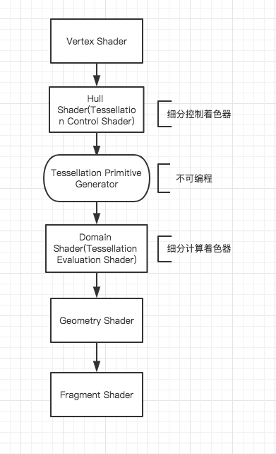

Unity Shader 学习 Tessellation(曲面细分)
关于Tessellation Shader
下图是渲染流程中的Shader顺序�?/p>

将Tessellation Shader展开后，请看下图�?/p>

也就是说我们要通过 Hull Shader �?Domain Shader 来控制Tessellation的实现�?/p>
Hull Shader
- 负责定义细分等级（LOD）和相关控制点在细分中的“形变”趋�?/li>
Domain Shader
实例代码
1
2
3
4
5
6
7
8
9
10
11
12
13
14
15
16
17
18
19
20
21
22
23
24
25
26
27
28
29
30
31
32
33
34
35
36
37
38
39
40
41
42
43
44
45
46
47
48
49
50
51
52
53
54
55
56
57
58
59
60
61
62
63
64
65
66
67
68
69
70
71
72
73
74
75
76
77
78
79
80
81
82
83
84
85
86
87
88
89
90
91
92
93
94
95
96
97
98
99
100
101
102
103
104
105
106
107
108
109
110
111
112
113
| Shader "Unlit/Tessellation"
{
Properties
{
_MainTex ("Texture", 2D) = "white" {}
}
SubShader
{
Tags { "RenderType"="Opaque" }
LOD 100
Pass
{
CGPROGRAM
#pragma vertex tessvert
#pragma fragment frag
#pragma hull hs
#pragma domain ds
#pragma target 4.6
#include "UnityCG.cginc"
#include "Lighting.cginc"
struct appdata
{
float4 vertex : POSITION;
float4 tangent : TANGENT;
float3 normal : NORMAL;
float2 texcoord : TEXCOORD0;
};
struct v2f
{
float2 texcoord:TEXCOORD0;
float4 vertex : SV_POSITION;
float4 tangent : TANGENT;
float3 normal : NORMAL;
};
struct InternalTessInterp_appdata {
float4 vertex : INTERNALTESSPOS;
float4 tangent : TANGENT;
float3 normal : NORMAL;
float2 texcoord : TEXCOORD0;
};
sampler2D _MainTex;
float4 _MainTex_ST;
InternalTessInterp_appdata tessvert (appdata v) {
InternalTessInterp_appdata o;
o.vertex = v.vertex;
o.tangent = v.tangent;
o.normal = v.normal;
o.texcoord = v.texcoord;
return o;
}
v2f vert (appdata v)
{
v2f o;
o.vertex = UnityObjectToClipPos(v.vertex);
o.texcoord = TRANSFORM_TEX(v.texcoord, _MainTex);
return o;
}
UnityTessellationFactors hsconst (InputPatch<InternalTessInterp_appdata,3> v) {
UnityTessellationFactors o;
float4 tf;
tf = float4(4.0f,4.0f,4.0f,4.0f);
o.edge[0] = tf.x;
o.edge[1] = tf.y;
o.edge[2] = tf.z;
o.inside = tf.w;
return o;
}
[UNITY_domain("tri")]
[UNITY_partitioning("fractional_odd")]]
[UNITY_outputtopology("triangle_cw")]
[UNITY_patchconstantfunc("hsconst")]
[UNITY_outputcontrolpoints(3)]
InternalTessInterp_appdata hs (InputPatch<InternalTessInterp_appdata,3> v, uint id : SV_OutputControlPointID) {
return v[id];
}
[UNITY_domain("tri")]
v2f ds (UnityTessellationFactors tessFactors, const OutputPatch<InternalTessInterp_appdata,3> vi, float3 bary : SV_DomainLocation) {
appdata v;
v.vertex = vi[0].vertex*bary.x + vi[1].vertex*bary.y + vi[2].vertex*bary.z;
v.tangent = vi[0].tangent*bary.x + vi[1].tangent*bary.y + vi[2].tangent*bary.z;
v.normal = vi[0].normal*bary.x + vi[1].normal*bary.y + vi[2].normal*bary.z;
v.texcoord = vi[0].texcoord*bary.x + vi[1].texcoord*bary.y + vi[2].texcoord*bary.z;
v2f o = vert (v);
return o;
}
fixed4 frag (v2f i) : SV_Target
{
return fixed4(1.0f,1.0f,1.0f,1.0f);
}
ENDCG
}
}
}
|
根据距离进行不同级别的细�?/p>
1
2
3
4
5
6
7
8
9
10
11
12
13
14
15
16
17
18
19
20
21
22
23
24
25
26
27
28
29
30
31
32
| texInput vert(vertexInput0 v)
{
vertexInput vi;
//计算距离因子
float dist = distance(_WorldSpaceCameraPos,mul(unity_ObjectToWorld, v.vertex))/(16*5);
vi.vertex = v.vertex;
vi.normal = v.normal;
vi.tangent = v.tangent;
float tf = (int)(lerp(5.2, 1.2, clamp(dist, 0.0, 1)));
if(tf==5)tf=4;
//tf = ((int)(tf*10))/10.0;
vi.TessFactor = tf;
return vi;
}
TessellationFactors patchConstantFunction (InputPatch<vertexInput, 3> patch)
{
TessellationFactors tf;
//tf.edge[0] = _TessellationUniform;
//tf.edge[1] = _TessellationUniform;
//tf.edge[2] = _TessellationUniform;
//tf.inside = _TessellationUniform;
//使用基于距离�?Tessellation
tfTessellation.edge[0] = 0.5fTTTessellation*(patch[1].TessFactor + patch[2].TessFactor);
tf.edge[1] = 0.5f*(patch[2].TessFactor + patch[0].TessFactor);
tf.edge[2] = 0.5f*(patch[0].TessFactor + patch[1].TessFactor);
tf.inside = tf.edge[0];
return tf;
}
|